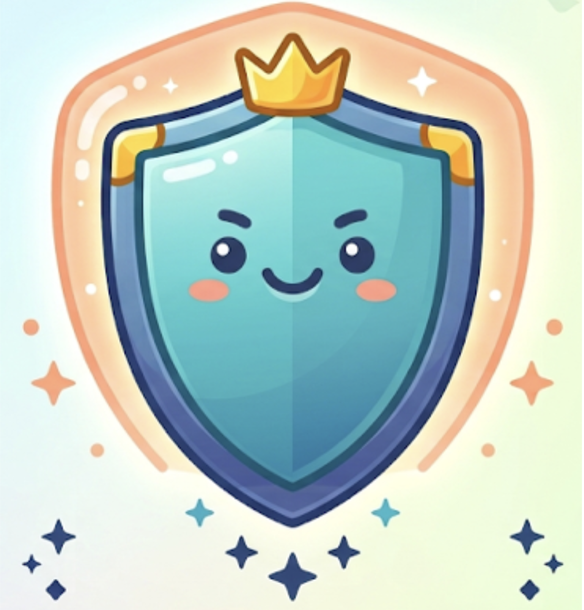
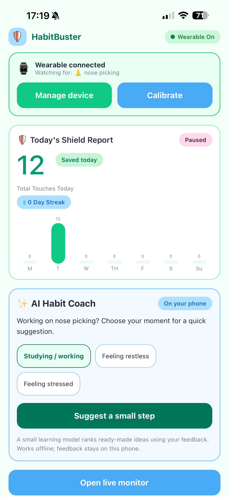
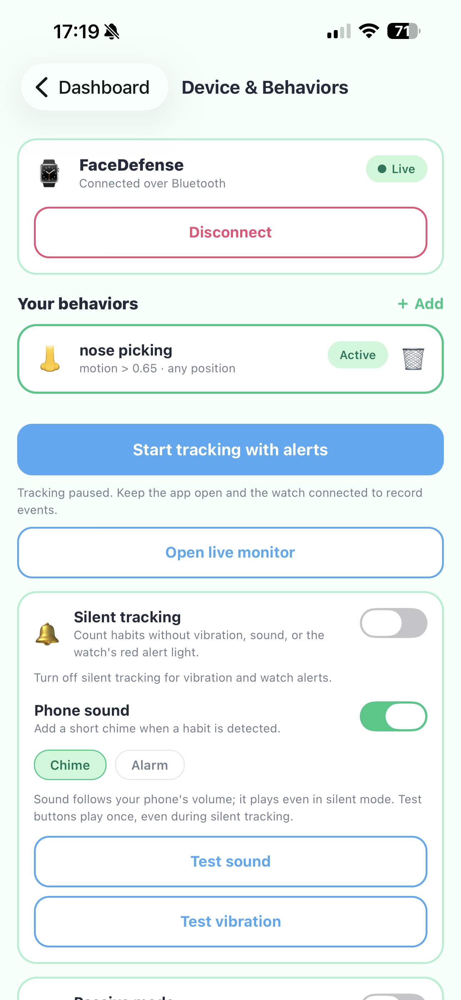
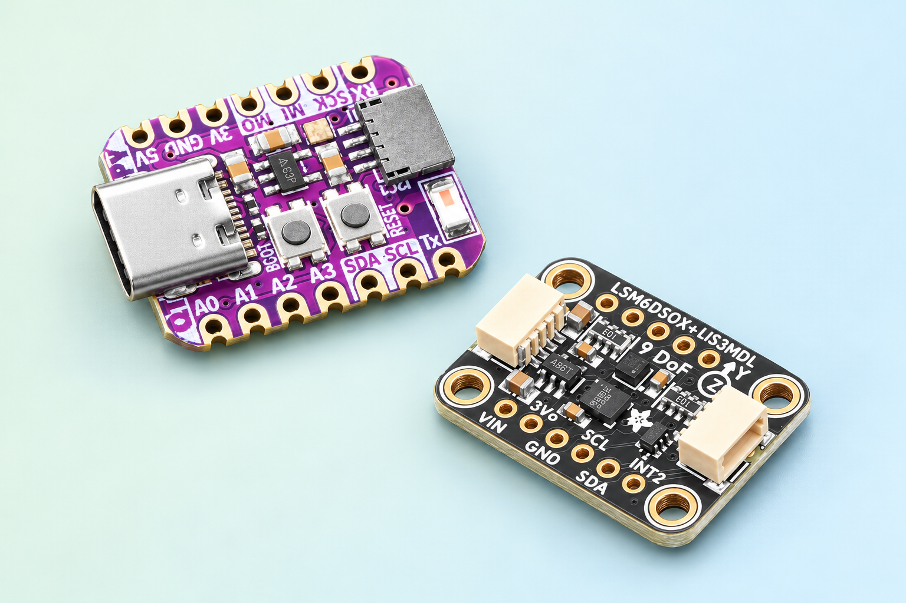

01 ↗
Connect your wearable.
Find your HabitBuster device in the app and connect over Bluetooth.
WEARABLE ↔ PHONE
HabitBuster.SMALL DEVICE. A LITTLE MORE AWARENESS.
A wearable that helps you catch those automatic moments. Calibrate a wrist motion, get a reminder, and give yourself a chance to pause.
See how it worksWearable sensor + companion app / Working prototype

01 / THE EVERYDAY ROUTINE
You don’t have to catch every moment on your own.
Start with a motion you want to notice.
Find your HabitBuster device in the app and connect over Bluetooth.
WEARABLE ↔ PHONERecord your resting position, then a gesture you want to notice, such as a nose-picking motion.
REST → GESTURE → CALIBRATEWhen similar motion is detected, a watch light or connected phone reminder gives you a cue to pause.
YOUR MOMENT TO CHOOSEFROM MOVEMENT TO AWARENESS
A simple journey from your wrist to your next choice.
02 / YOUR COMPANION APP
See what was detected and choose how you want to be reminded. Simple controls, at your pace.
Review received events and a weekly count view.
Phone vibration, optional sound, or silent tracking.
Save behavior profiles and monitor one at a time.
Different moments call for different cues.
Interactive preview · These controls demonstrate the app; they do not connect to a device.
A CLOSER LOOK
Explore the dashboard and device settings from the current HabitBuster prototype. Screenshot counts are example session records, not evidence of habit reduction.


0102Real component photos · Edited studio composition
03 / BUILT TO NOTICE
HabitBuster pairs an ESP32-based wearable with a motion sensor and a companion app. Your calibration helps the device flag similar wrist movements.
Working prototype. Still learning and improving.
The device matches movement, so it cannot independently confirm a specific habit. Similar movements can trigger alerts, and some gestures may be missed. Fit and calibration matter.
Phone records depend on a working Bluetooth connection and app execution. Background alerts are not guaranteed. Silent tracking mutes foreground reminders; passive notifications are a separate setting.
A LITTLE MORE AWARE. ONE MOMENT AT A TIME.
A wearable prototype for personalized habit awareness.